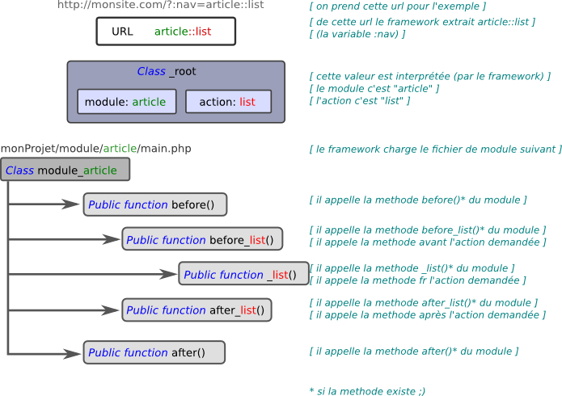
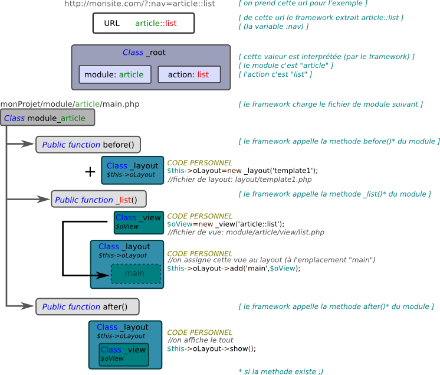
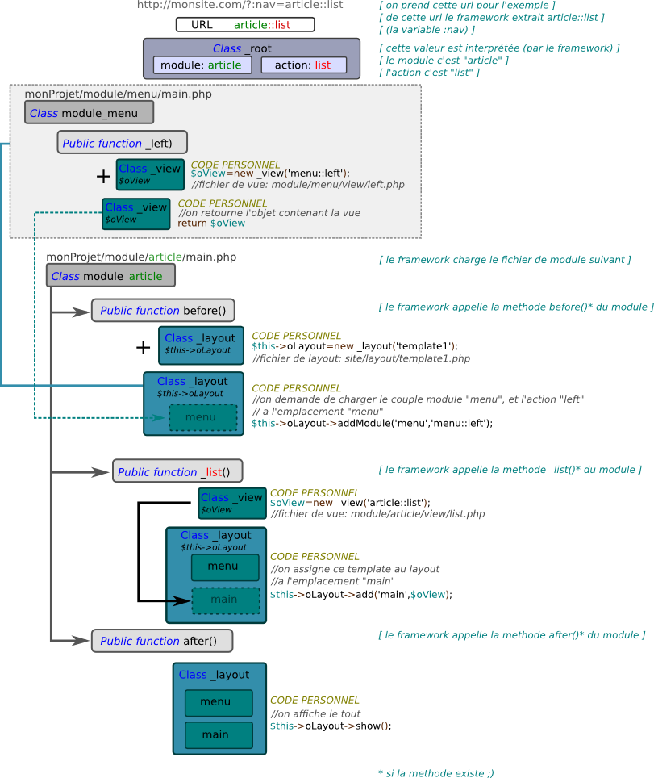

Présentation générale
Voici la logique de fonctionnement du frameworkComment le framework va analyser une url, et choisir d'appeler un module et ses méthodes

Layout et template
Ci-dessous la manière la plus naturelle de gérer le couple layout/vues.Vous êtes libre de la respecter ou non ;) 
Layout et template un peu plus complexe
On complexifie un peu ici, en commencant par charger le menu dans le layout en d√©but de module à un emplacement du layout.